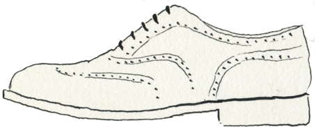
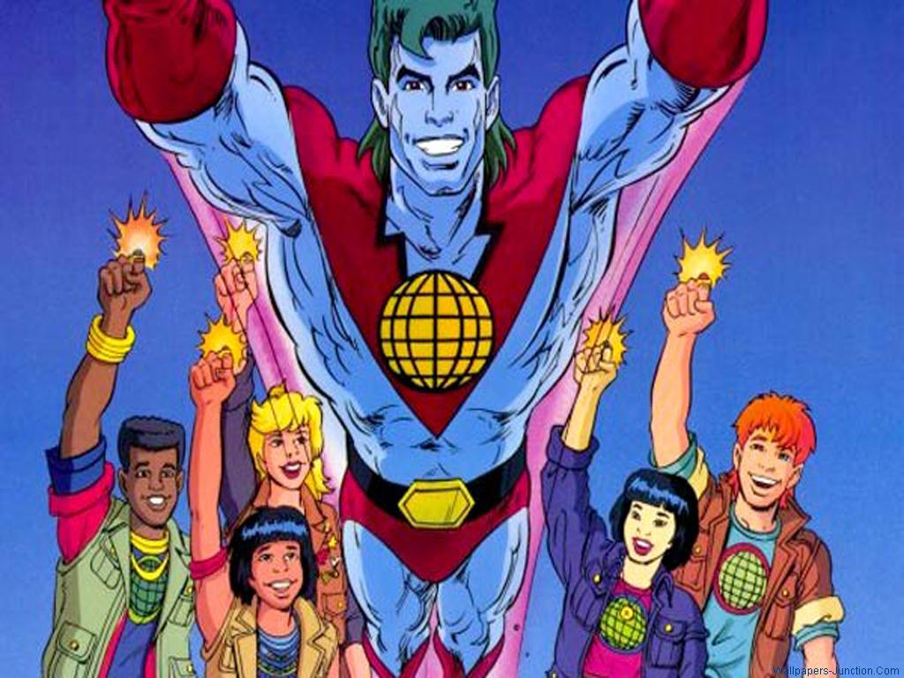
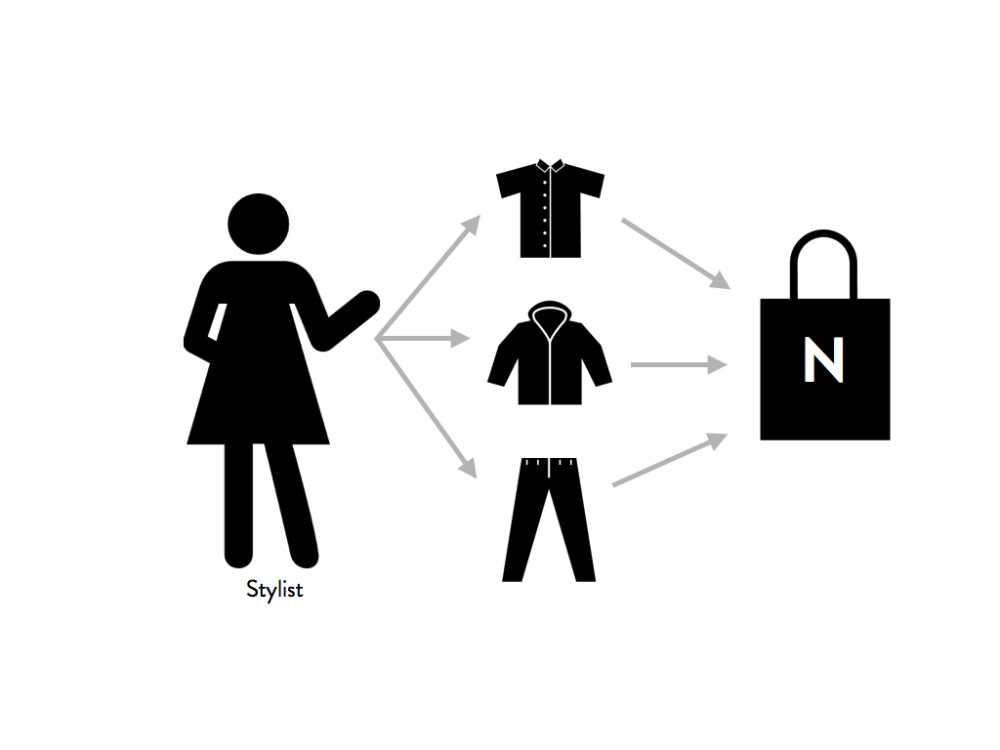
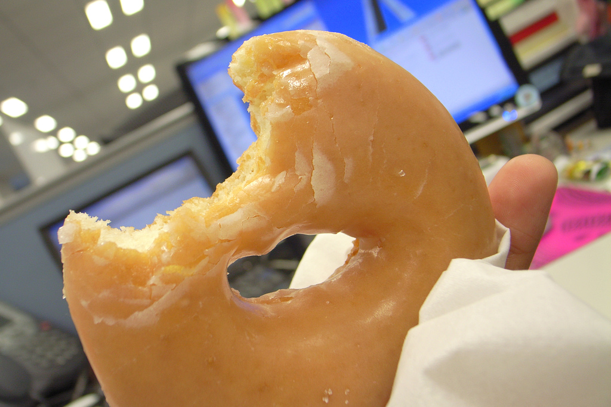
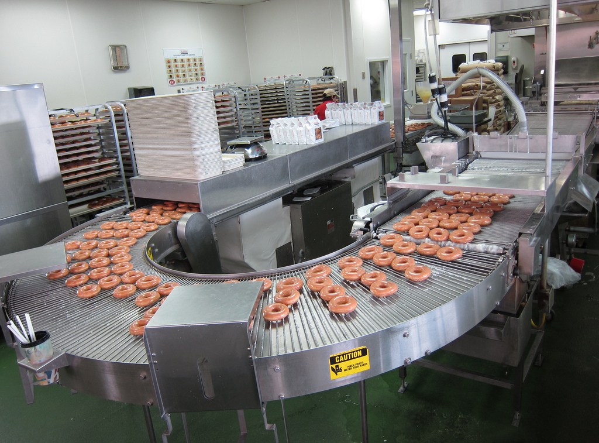

How Nordstrom utilizes humans as learning machines to blend brick-and-mortar with online commerce
Erin Shellman PhD - Data Scientist
David Von Lehman - Developer
The Nordstrom Data Lab Mission
Delighting customers through data-driven products.

Nordstrom Data Lab Timeline
Our Powers Combined
Placeholder for imagery of our human-derived data sources.
There has been a shift in our thinking. A part of our resources are now more human curated...
our engineers evolve the algorithm, and humans help us see if a suggested change is really an improvement.
- Scott Huffman
Engineering Director at Google
At Nordstrom we make recommendations with EASE
EASE
Emulate
Automate
Scale
Evaluate
Three Applications of EASE
- Our Stylist Suggest
- Recommendo
- My Color Palette
Stylists at Nordstrom
How to Emulate a stylist?
Stylist-based Market Basket Analysis
How to Emulate a stylist?
Stylist-based Market Basket Analysis

How to Emulate a stylist?
Stylist-based Market Basket Analysis
Evaluate
Test internally with cheap prototype
Compare to incumbent
Automate
Evaluate
A/B Test against incumbent
TODO: ADD CHART SHOWING AWESOMENESS
Scale
Recommendo
TODO: ADD SLIDES ABOUT SCALING AND RECOMMENDO AND STUFF
Lessons learned
Lessons learned
Mmmm, Tasty Data Insights
Let's Go To Production!
Acknowledgements
Sara Hogenson, Paul Payne, Abid Saifee